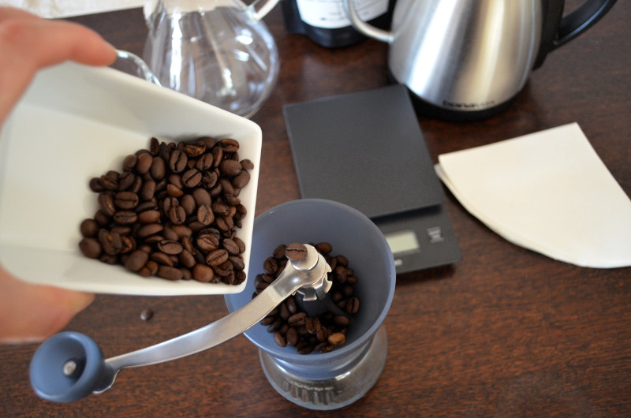
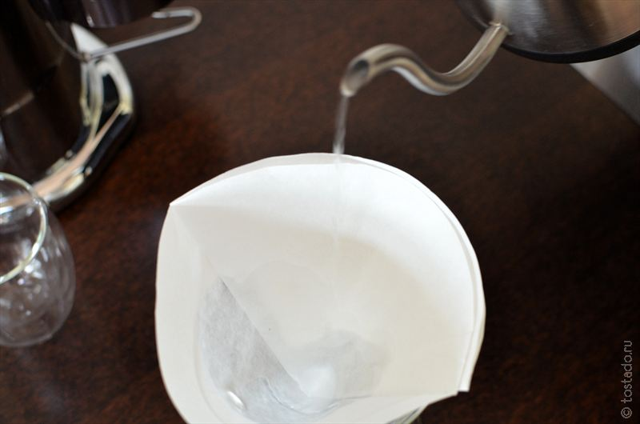
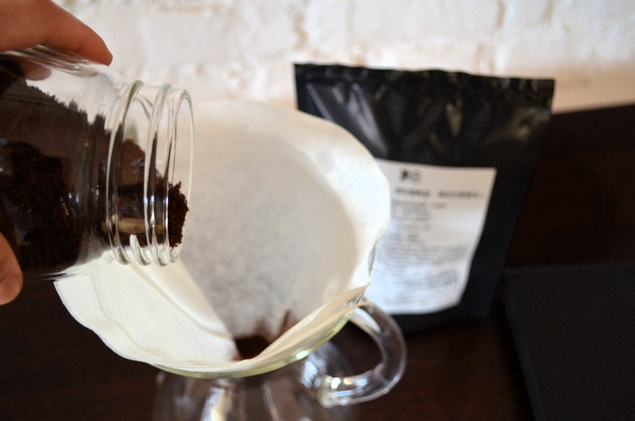
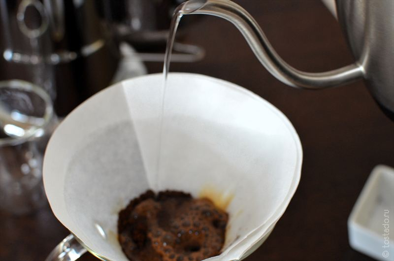
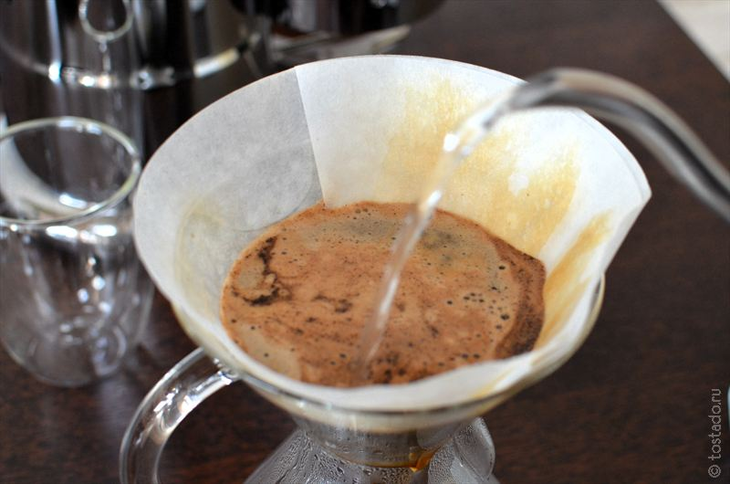
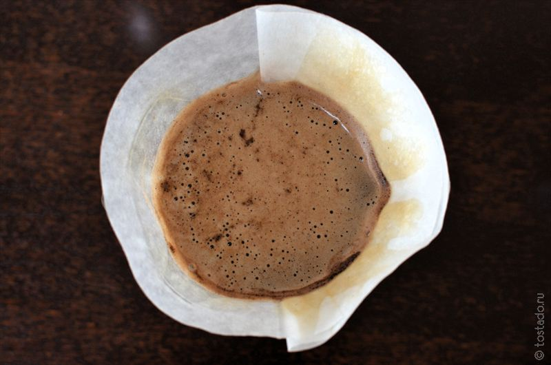
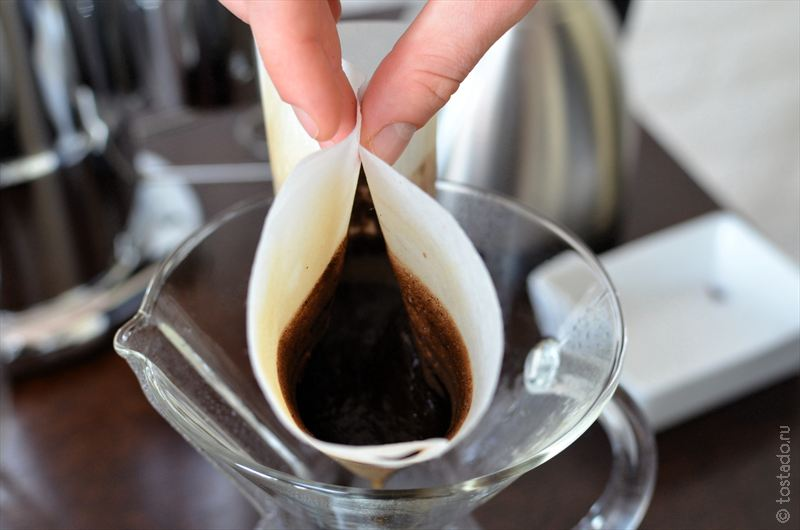
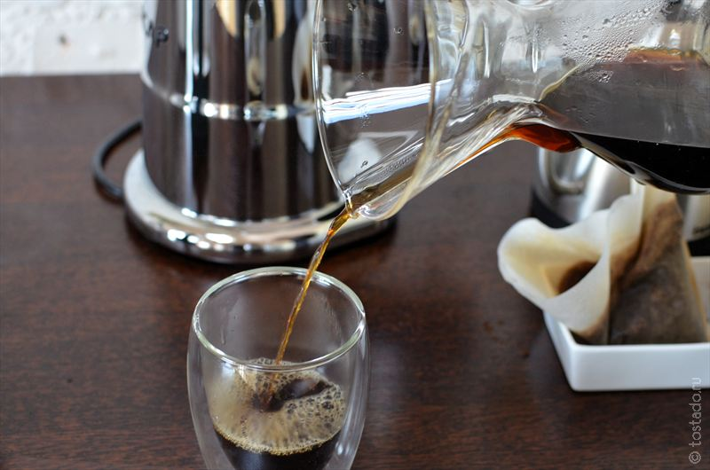

Ко́фе, также Кофе́йное де́рево (лат. Coffea) — род вечнозелёных растений трибы Кофейные (Coffeeae) семейства Мареновые (Rubiaceae). В диком виде обитают в нагорьях тропической Африки и Азии, культивируются в тропиках повсеместно. Большинство видов — небольшие деревья или крупные кустарники, высотой до 8 метров. В комнатных условиях чаще принимают форму куста. Все части растений содержат кофеин, служащий отпугивающим вредителей средством, однако некоторые виды содержат его достаточно много, а другие очень мало (хотя содержат все виды).
Цветёт кофе небольшими белыми цветками с сильным тропическим запахом. Цветок содержит как мужские, так и женские половые органы (пестики и тычинки) и способен к самоопылению. Плоды — ягоды с 1—3 семенами внутри; созревают 3—4 месяца, в зрелом состоянии представляют собой ярко-красные или бордовые (выведены сорта и с другими окрасками) эллипсоиды, сидящие на короткой плодоножке прямо на ветке. Под мякотью расположены семена, имеющие до обработки желтовато-зеленовато-серую окраску.
История кофе охватывает несколько периодов. История кофе берёт начало с древнейших времен и уходит корнями в первые цивилизации Ближнего Востока, хотя происхождение кофе до сих пор остаётся неясным. Считается, что эфиопские предки народов оромо первыми заметили возбуждающий эффект кофейного зерна[6]. Однако никаких прямых доказательств на этот счёт нет, не сохранились и свидетельства о том, где в Африке произрастал кофе или кто среди африканцев мог знать о существовании кофе раньше XVII века[6]. Согласно широко распространённой легенде, первооткрывателем уникальных свойств кофейного дерева стал эфиопский пастух Калдим приблизительно в 850 году. Позднее возникновение данной легенды (1671 год) и отсутствие свидетельств самого Калдима заставляют ряд исследователей предполагать, что легенда недостоверна[7]. Из Эфиопии кофе распространился в страны Египет и Йемен[8]. Наиболее ранние свидетельства употребления кофе относятся к середине XV века, это записи в суфийских монастырях Йемена[6]. Из Эфиопии кофейный напиток распространился по всему Ближнему и Среднему Востоку. К XIX веку кофе широко распространился в Италии, Индонезии и Америке[9]. Первоначально (около 1200 года) кофе готовился как отвар из высушенной оболочки кофейных зёрен. Затем возникает идея об обжаривании этой оболочки на углях. Обжаренную кожуру и небольшое количество серебристой шкурки засыпали на полчаса в кипящую воду[10]. В настоящее время насчитывается более ста сортов кофе. Высшие сорта кофе отличаются крепким настоем и ароматом. В Европе он чрезвычайно ценился до XVIII века. Позже кофе отнесли к числу вредных напитков, и только в XX веке кофе снова стал популярен[11]. По месту произрастания кофе делят на три группы: американский, африканский и азиатский[12].
Для получения оптимального результата важно использовать кофе среднего помола. Для этого мы рекомендуем воспользоваться хорошей жерновой кофемолкой, потому что ножевые кофемолки не позволяют достичь качественного равномерного помола, который является необходимым условием для получения насыщенного напитка с большим количеством вкусовых нюансов.
Сложите фильтр так, чтобы получился конус со сторонами в 1 и 3 слоя. Поместите бумажный фильтр в верхнюю часть кемекса, трехслойной стороной к носику колбы. Обильно полейте бумажный фильтр горячей водой, чтобы удалить привкус бумаги и прогреть кемекс. Дайте воде полностью стечь в колбу кемекса, после чего, не вынимая фильтра, слейте воду через носик. Следите за тем, чтобы фильтр плотно прилегал с стенкам кемекса.
Вам понадобится 42 грамма кофе на 600 мл воды. Насыпьте свежемолотый кофе в кемекс и сделайте в горке кофе небольшое углубление для того, чтобы было удобнее наливать воду.
Аккуратно добавьте небольшое количество воды (примерно 50 мл), чтобы смочить кофе и начать процесс предварительной экстракции. Очень важно добавлять воду плавно, круговыми движениями, равномерно смачивая кофе. Температура воды должна составлять 95 С.
По прошествии 30 секунд (когда вся вода впиталась), начните заливать кофе водой. Наливайте воду медленно, тонкой струйкой, двигаясь по кругу от края к центру до тех пор пока уровень воды не будет отстоять на 3/4 см от верхнего края колбы. Следите за тем, чтобы цвет поверхности кофе был как можно более равномерным без темных и светлых пятен.
Как только вода просочится в кемекс и начнет появляться сухой кофе, долейте воды (до тех пор, пока общий объем залитой воды не составит 600 мл). Следите за тем, чтобы кофе распределялся равномерно, а не скапливался в центре, и чтобы цвет поверхности был как можно более равномерным.
Дайте просочиться кофе в кемекс, после чего удалите бумажный фильтр.
Разлейте кофе по чашкам. Пришло время насладиться вкусом свежеприготовленного кофе.
+7777-375-70-45
coffee@mail.ru
Пионерская 48.Костанай